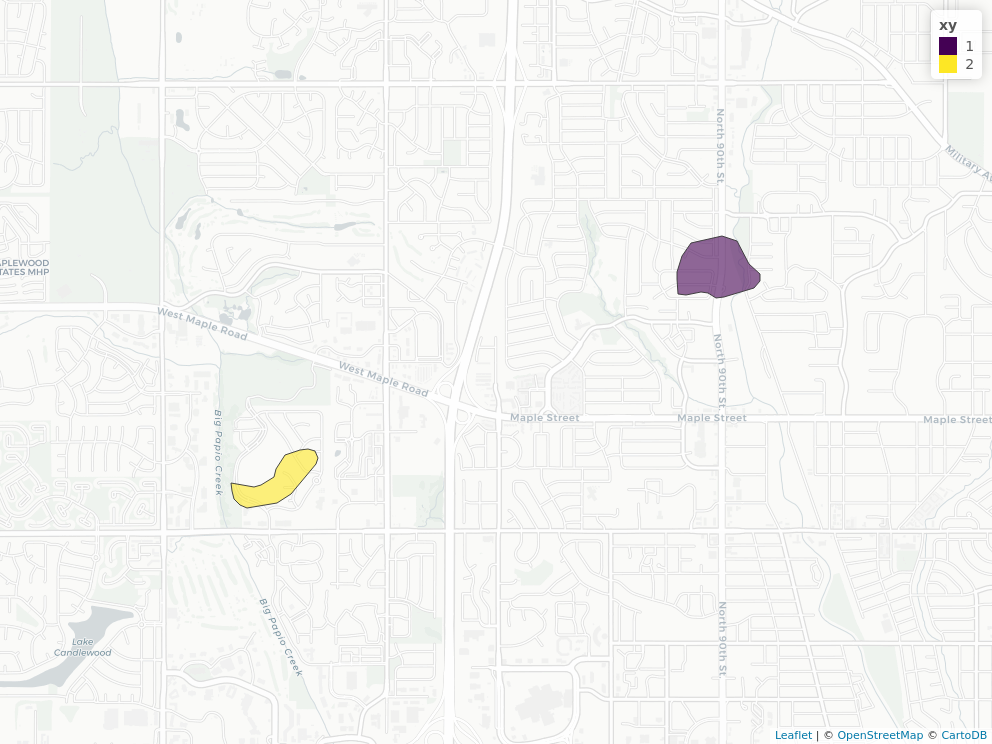
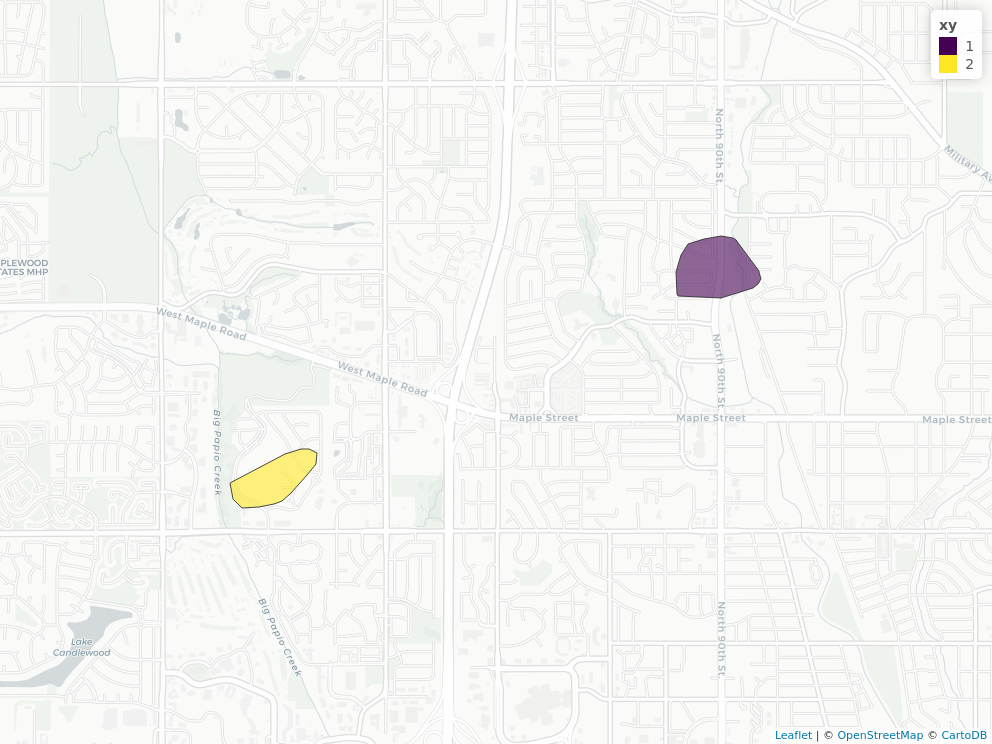
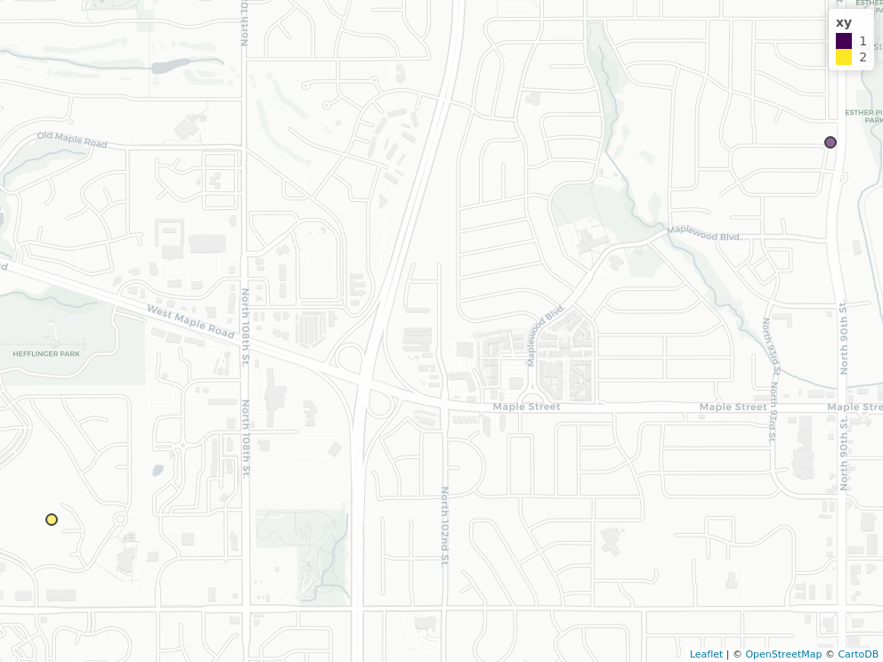
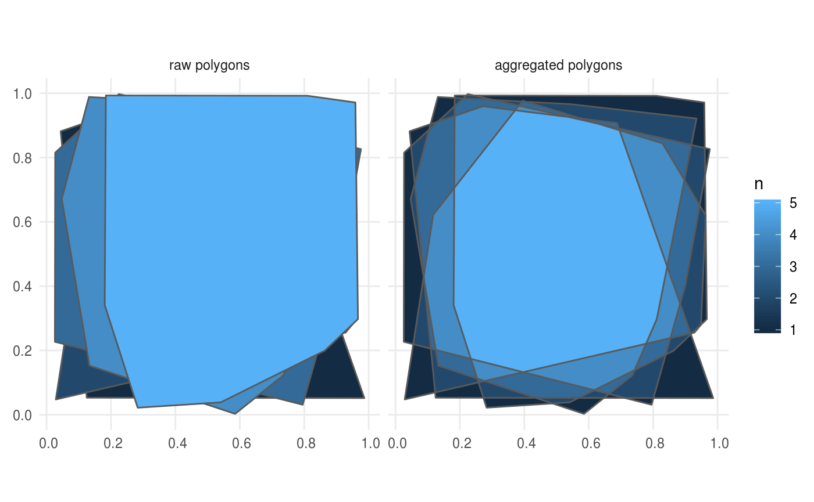
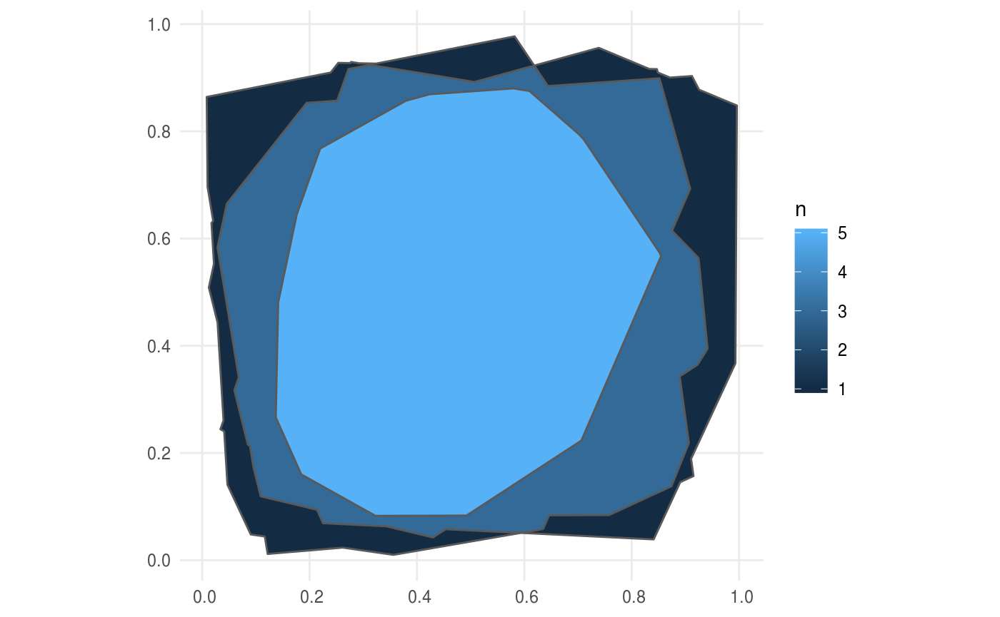

mapscanner
Mark Padgham and Michael D. Sumner
2019-07-11
Source:vignettes/mapscanner.Rmd
mapscanner.RmdWhat does this package do for me?
mapscanner is an R package that enables maps to be printed out, drawn on, scanned back in, and have the drawn components converted to spatial objects. It is intended for use in social surveys and similar endeavours in which printed paper maps are preferred over digital screens, and enables marks drawn by hand on paper maps to be converted to spatial objects. The use of paper maps is often advantageous because (i) they cost much less than computer devices otherwise needed for digital equivalents; and (ii) they may in many situations be deemed to yield more reliable or accurate results through removing the psychological barriers often associated with screen-based surveys.
How do I use it?
Installation
mapscanner is not yet on CRAN, so must be installed with the remotes package:
After that, the library can be loaded with
Usage
The package is designed to enable the following workflow:
Generate a map with the
ms_generate_map()function, which automatically produces both.pdfand.pngversions;Print the
.pdfversion to use as desired in any kind of survey environment;Draw on the map;
Digitise the drawn-on (from here on, “modified”) map, converting it to either
.pdfor.pngformat; andRectify the modified version against the original via the
ms_rectify_maps()function, which distinguishes individual annotations, and converts each one to a spatial object able to be analysed in any desired manner.
Practical tips
Unlike most software packages, mapscanner is intended to aid a practical workflow, and so a few practical tips may be recommended here to ensure best results:
- The original digital files generated with
ms_generate_map()are necessary to rectify subsequently drawn-on and scanned maps, and so must be retained at all times. - Marks drawn on maps should be coloured – any black or grey markings will be ignored. This has the advantage that individual annotations not intended to be converted to spatial objects (such as unique identification or participant codes) may be made on maps in black or grey.
- For drawings of areas, care should be taken to ensure all lines form closed polygons; only in cases where this is not possible or practicable, the
type = "hulls"argument should be used in map rectification, as described further below. - Digitised versions should contain white borders, so do not, for example, photograph modified maps lying on dark surfaces. If maps are to be photographed, then best results can be achieved by simply placing them on a larger, enclosing sheet of white paper.
The following two sections describe the two primary functions of the mapscanner package, corresponding to the two primary steps of producing maps to be used in surveys, and rectifying modified maps against these originals in order to extract spatial objects. The second of these sections also describes the kinds of markings able to be recognised, and the kinds of spatial objects to which these may be converted.
Map generation
The ms_generate_map() function generates printable maps for a specified bounding box in both .pdf and .png formats. Usage is a simple as,
## Successfully generated 'chennai.pdf' and 'chennai.png'The two generated maps are saved in the current working directory (getwd()). To save maps in alternative locations, the mapname parameter can optionally specify paths. To provide finer control over the scales of maps, precise bounding boxes can also be submitted. To determine desired bounding boxes, we recommend using the ‘openstreetmap.org’ website, zooming to a desired area, then clicking the “Export” button. A window will appear which includes the bounding coordinates of the current screen. Even finer control can be gained by clicking beneath this coordinate window on the line which says, “Manually select a different area,” which brings a drag-able rectangle onto the current screen. The coordinates in the bounding box then simply need to be entered in to the bbox parameter of ms_generate_map() in the order (xmin, ymin, xmax, ymax) – or anti-clockwise from the left-hand coordinate.
Maps are generated in two formats, because the .pdf version will generally be the most convenient for printing, while the png version should be retained as the “master” copy against which to rectify subsequently scanned-in version. Behind the scenes, the function downloads a series of vector map tiles from mapbox, and converts them to a rasterBrick object from the raster package. This rasterBrick object is invisibly returned from the function:
## Successfully generated 'chennai.pdf' and 'chennai.png'## class : RasterBrick
## dimensions : 574, 282, 161868, 3 (nrow, ncol, ncell, nlayers)
## resolution : 76.43703, 76.43703 (x, y)
## extent : 8921118, 8942674, 1442749, 1486624 (xmin, xmax, ymin, ymax)
## crs : +proj=merc +a=6378137 +b=6378137
## source : memory
## names : layer.1, layer.2, layer.3
## min values : 101, 101, 101
## max values : 255, 255, 255This rasterBrick object contains raster information for the three colour channels of the image, and so may also be used for immediate viewing within R with raster::plotRGB(x).
Standard uses of the package should not need to explicitly access or modify these data, but it is nevertheless possible to do so, and then use a custom-modified object to produce the external .pdf and .png files by submitting the rasterBrick object to ms_generate_map():
Map rectification
Having produced digital maps using the ms_generate_map() function as described above, and having printed, variously drawn-on, and scanned the result back in to digital form, the package can then be used to rectify the hand-drawn markings against the original map with the ms_rectify_maps() function, which returns the drawn-on objects as spatial objects in Simple Features (sf) format. The only requirement is that the drawn-on objects are coloured; black or grey objects will not be recognised. As described above, this has the advantage that maps may be annotated in ways not intended to be converted to spatial objects (such as adding unique identification or participant codes), through simply providing such annotations in grey or black.
The ms_rectify_maps() function has only two primary arguments, specifying the names (and locations) of the original and modified map files – in that order: ms_rectify_maps(original, modified). These files should ideally be in .png formats, but will be auto-converted from .pdf if needed. The package comes with two sample maps, both in .png format. The first is the reference version needed for rectification, while the second has two red lines drawn upon it:

Converting the lines on this scanned image file is then as simple as:
f_orig <- system.file ("extdata", "omaha.png", package = "mapscanner")
f_mod <- system.file ("extdata", "omaha-polygons.png", package = "mapscanner")
xy <- ms_rectify_maps (f_orig, f_mod)## ══ mapscanner ═════════════════════════════════════════════════════════════## ❯ rectifying the two maps
✔ rectifying the two maps
## ❯ extracting drawn objects
✔ extracting drawn objects
## ❯ converting to spatial format
✔ converting to spatial format## Simple feature collection with 2 features and 0 fields
## geometry type: POLYGON
## dimension: XY
## bbox: xmin: -96.11764 ymin: 41.26657 xmax: -96.02752 ymax: 41.3008
## epsg (SRID): 4326
## proj4string: +proj=longlat +datum=WGS84 +no_defs
## geometry
## 1 POLYGON ((-96.04196 41.2963...
## 2 POLYGON ((-96.11764 41.2697...The result of ms_rectify_maps() can be plotted using any standard option for plotting spatial data, such as through online mapping packages such as mapview:

Types of map markings and types of spatial objects
The ms_rectify_maps() function has an additional argument, type, which takes the following values:
-
type = "polygons"(the default), which returns the outlines traced around each individual drawn object. This tracing is pixel-based, resulting in polygons with one point for each scanned pixel which may generate spatial objects that are both overly large as well as visually pixillated. The function includes an additionaldownsampleparameter which down-samples as smooths the resultant polygons by the specified multiple. -
type = "hulls", which returns convex hulls around distinct sets of contiguously marked lines, regardless of whether those lines form closed polygons or not. -
type = "points", which returns single points (as geometric centroids) for each object. This is useful for identification of individual point locations regardless of the kinds of marks actually drawn on a map (dots, circles, crosses, or any shape, should all give equivalent results).
The default type of polygons assumes – and indeed requires – that the drawn objects are closed polygons (as illustrated in the first of the above figures), so care must be taken to ensure this is in fact the case. Any lines that do not form closed circles will not be appropriately translated.
The other type values are illustrated in the following maps:
f_orig <- system.file ("extdata", "omaha.png", package = "mapscanner")
f_mod <- system.file ("extdata", "omaha-polygons.png", package = "mapscanner")
xy <- ms_rectify_maps (f_orig, f_mod, type = "hulls", quiet = TRUE)
f_orig <- system.file ("extdata", "omaha.png", package = "mapscanner")
f_mod <- system.file ("extdata", "omaha-polygons.png", package = "mapscanner")
xy <- ms_rectify_maps (f_orig, f_mod, type = "points", quiet = TRUE)
Bonus Feature: Polygon Aggregation
Maps are typically used in social surveys to delineate participant’s understanding or perception of particular regions or areas. In such contexts, surveys often result in numerous polygonal shapes representing different perceptions of a particular region. The mapscanner package provides an additional function, ms_aggregate_polys(), to aggregate polygons into a single “heat map” containing vector outlines of aggregated polygons. Each component of these aggregated polygons defines the region within which n polygons overlap.
The following is a slightly more complicated version of the example provided for ms_aggregate_polys(), starting by generating a series of polygons as convex hulls surrounding random points.
n <- 5 # number of polygons
polys <- lapply (seq (n), function (i) {
nxy <- 20 # number of points used to generate hull
xy <- matrix (runif (2 * nxy), ncol = 2)
h <- chull (xy)
sf::st_polygon (list (xy [c (h, h [1]), ]))
})
polys <- sf::st_sf (n = seq (n), geometry = polys)
aggr <- ms_aggregate_polys (polys)
polys$type <- "raw polygons"
aggr$type <- "aggregated polygons"
polys <- rbind (polys, aggr)
library (ggplot2)
ggplot (polys, aes (fill = n)) + geom_sf () + facet_wrap (~type)
The left panel of that figure shows the random polygons in raw form successively overlaid upon one another. The right panel shows the aggregated contours of successive overlap from 1 to 5. The object returned from ms_aggregate_polys() contains polygons ordered by level of aggregation (n), so the first entirely encloses the second; the second encloses the third; and so on. Particular contours can then be directly selected by filtering for desired values of n:

Polygon aggregation enables many interesting analyses to be performed, such as relationships between aggregation level and area:

That result is of course (roughly) linear, because it was derived from random data. In actual usage, results such as that are likely to generate direct insight into consensus of opinion regarding how people understand particular areas.
How it works
(This section is not necessary for package usage, and merely provides detail for those interested in how the process actually works.) mapscanner primarily relies on the RNiftyReg package to rectify the images. This package is itself primarily aimed at rectifying medical scans, but also happens to be the perfect tool for the present purposes. Being an image recognition software, the library requires image objects, and so not pdf files, which is why the ms_generate_map() function produces both kinds of files - the .pdf for printing and the .png for rectifying with the RNiftyReg package.
Rectification re-projects a scanned image back on to the coordinate system of an original image. This coordinate system translates here in to a defined bounding box (which will generally differ slightly from the values input into the function, due to the cutting and stitching of the vector tiles). This bounding box is embedded as meta-information in both the files produced by ms_generate_map(); in the .pdf as standard meta information accessible in R like this:
## $Title
## [1] "EX8921118.44521949+1442748.9088827+8942673.68719591+1486623.76311839"
##
## $Producer
## [1] "R 3.6.0"
##
## $Creator
## [1] "R"or in a terminal via pdfinfo (or non-linux equivalent), and embedded in the .png file as comment, accessible like this:
## [1] "EX8921118.44521949+1442748.9088827+8942673.68719591+1486623.76311839"or in a terminal via identify -verbose command (itself part of the imagemagick library which drives the magick R package).